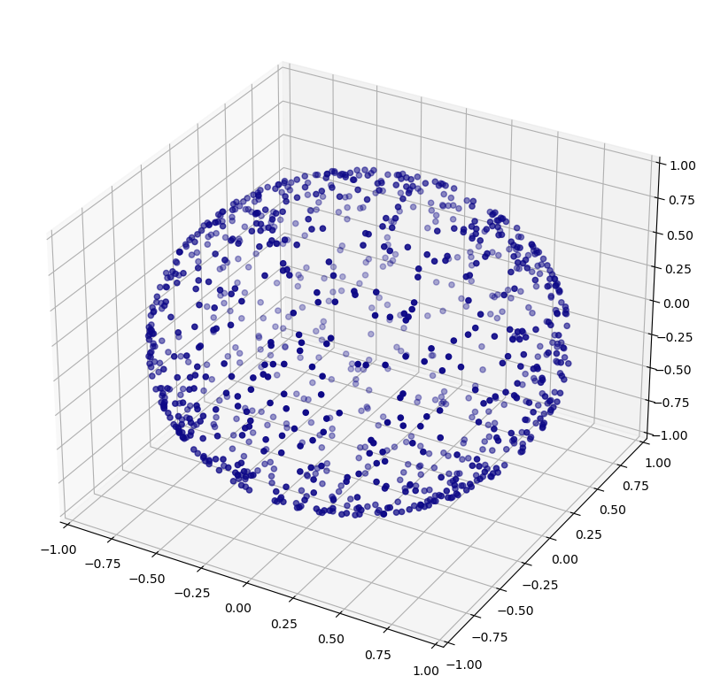
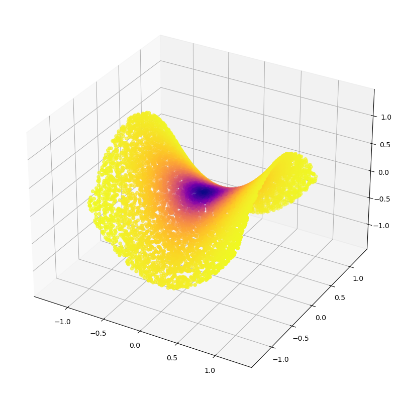

import sympy as symDatasets
Toy manifolds, their curvatures, and density-respecting samplings
In this notebook, we’ll build various toy datasets and calculate their sectional curvatures.
This will use the Python symbolic computation library, sympy. Note: this library is not required to use the diffusion_curvature package. We merely employ it to calculate the curvature and appropriate expressions for rejection sampling.
theta = sym.Symbol('theta')
phi = sym.Symbol('phi')
R = sym.Symbol("R")
r = sym.Symbol("r")f1 = (R + r*sym.cos(theta))*sym.cos(phi)sym.diff(f1,theta)\(\displaystyle - r \sin{\left(\theta \right)} \cos{\left(\phi \right)}\)
f = sym.Matrix([(R + r*sym.cos(theta))*sym.cos(phi), (R + r*sym.cos(theta))*sym.sin(phi), r*sym.sin(theta)])sym.diff(f, theta)\(\displaystyle \left[\begin{matrix}- r \sin{\left(\theta \right)} \cos{\left(\phi \right)}\\- r \sin{\left(\phi \right)} \sin{\left(\theta \right)}\\r \cos{\left(\theta \right)}\end{matrix}\right]\)
(sym.diff(f, theta).T * sym.diff(f, theta))[0]\(\displaystyle r^{2} \sin^{2}{\left(\phi \right)} \sin^{2}{\left(\theta \right)} + r^{2} \sin^{2}{\left(\theta \right)} \cos^{2}{\left(\phi \right)} + r^{2} \cos^{2}{\left(\theta \right)}\)
def rejection_sample_formula(f, variables):
G = sym.Matrix.zeros(2,2)
for i, x1 in enumerate(variables):
for j, x2 in enumerate(variables):
G[i,j] = (sym.diff(f, x1).T * sym.diff(f, x2))[0]
return sym.sqrt(G.det().simplify()).simplify()t = rejection_sample_formula(f,[theta, phi])
t\(\displaystyle \sqrt{r^{2} \left(R + r \cos{\left(\theta \right)}\right)^{2}}\)
Torus
The curvature of the torus is given by \[ S(\theta) = \frac{8 \cos{\theta}}{5 + \cos{\theta}} \]
rejection_sample_for_torus
rejection_sample_for_torus (n, r, R)
/home/piriac/mambaforge/envs/diffusion_curvature/lib/python3.11/site-packages/fastcore/docscrape.py:225: UserWarning: potentially wrong underline length...
Parameters
----------- in
Sample `n` data points on a torus. Modified from [tadasets.shapes — TaDAsets 0.1.0 documentation](https://tadasets.scikit-tda.org/en/latest/_modules/tadasets/shapes.html#torus)
Uses rejection sampling....
else: warn(msg)torus
torus (n=2000, c=2, a=1, noise=None, seed=None, use_guide_points=False)
Sample n data points on a torus. Modified from tadasets.shapes — TaDAsets 0.1.0 documentation Uses rejection sampling.
In addition to the randomly generated points, a few constant points have been added. The 0th point is on the outer rim, in a region of high positive curvature. The 1st point is in the inside, in a region of negative curvature, and the 2nd point is on the top, where the curvature should be closer to zero.
| Type | Default | Details | |
|---|---|---|---|
| n | int | 2000 | Number of data points in shape. |
| c | int | 2 | Distance from center to center of tube. |
| a | int | 1 | Radius of tube. |
| noise | NoneType | None | |
| seed | NoneType | None | Seed for random state. |
| use_guide_points | bool | False |
Visualize with the curvature
X,ks = torus(n=5000)
plot_3d(X, ks, title="Torus with scalar curvature")
One-Sheet Hyperboloid
First, let’s determine the rejection sampling formula
a = sym.Symbol('a')
b = sym.Symbol('b')
theta = sym.Symbol("theta")
u = sym.Symbol('u')
f = sym.Matrix(
[a*sym.cos(theta)*sym.sqrt(u**2+1),b*sym.sin(theta)*sym.sqrt(u**2+1),u]
)variables = [theta, u]
rej = rejection_sample_formula(f, variables)
rej\(\displaystyle \sqrt{a^{2} b^{2} u^{2} + a^{2} u^{2} \sin^{2}{\left(\theta \right)} + a^{2} \sin^{2}{\left(\theta \right)} - b^{2} u^{2} \sin^{2}{\left(\theta \right)} + b^{2} u^{2} - b^{2} \sin^{2}{\left(\theta \right)} + b^{2}}\)
hyperboloid
hyperboloid (n=2000, a=2, b=2, c=1, u_limit=2, seed=None)
Sample roughly n points on a hyperboloid, using rejection sampling.
| Type | Default | Details | |
|---|---|---|---|
| n | int | 2000 | number of points, by default 2000 |
| a | int | 2 | hyperboloid param1, by default 2 |
| b | int | 2 | hyperboloid param2, by default 2 |
| c | int | 1 | stretchiness in z, by default 1 |
| u_limit | int | 2 | Constrain the free parameter u to [-l,l], by default 2 |
| seed | NoneType | None | For repeatability, seed the randomness, by default None |
| Returns | The sampled points, and the curvatures of each point |
rejection_sample_for_hyperboloid
rejection_sample_for_hyperboloid (n, a, b, c, u_limit)
<function nbdev.showdoc.show_doc(sym, renderer=None, name: 'str | None' = None, title_level: 'int' = 3)>X, ks = hyperboloid(2000)
plot_3d(X,ks,colorbar=True,use_plotly=False)
Ellipsoid
a = sym.Symbol('a')
b = sym.Symbol('b')
c = sym.Symbol('c')
theta = sym.Symbol("theta")
phi = sym.Symbol("phi")
u = sym.Symbol('u')
f = sym.Matrix(
[a*sym.cos(theta)*sym.sin(phi),b*sym.sin(theta)*sym.sin(phi),c*sym.cos(phi)]
)variables = [theta, phi]
rej = rejection_sample_formula(f, variables)
rej\(\displaystyle \sqrt{- a^{2} b^{2} \sin^{4}{\left(\phi \right)} + a^{2} b^{2} \sin^{2}{\left(\phi \right)} + a^{2} c^{2} \sin^{4}{\left(\phi \right)} \sin^{2}{\left(\theta \right)} - b^{2} c^{2} \sin^{4}{\left(\phi \right)} \sin^{2}{\left(\theta \right)} + b^{2} c^{2} \sin^{4}{\left(\phi \right)}}\)
ellipsoid
ellipsoid (n=2000, a=3, b=2, c=1, seed=None, noise=None)
Sample roughly n points on an ellipsoid, using rejection sampling.
| Type | Default | Details | |
|---|---|---|---|
| n | int | 2000 | number of points, by default 2000 |
| a | int | 3 | ellipsoid param1, by default 3 |
| b | int | 2 | ellipsoid param2, by default 2 |
| c | int | 1 | stretchiness in z, by default 1 |
| seed | NoneType | None | For repeatability, seed the randomness, by default None |
| noise | NoneType | None | |
| Returns | The sampled points, and the curvatures of each point |
rejection_sample_for_ellipsoid
rejection_sample_for_ellipsoid (n, a, b, c)
X, ks = ellipsoid(n=5000, noise = 0.1)
plot_3d(X,ks,colorbar=True)
Hypersphere
sphere
sphere (n, radius=1, noise=0, use_guide_points=False)
X, ks = sphere(n=1000)
plot_3d(X)
Random Cube
def random_cube(n):
"""Return a random cube
Parameters
----------
n : _type_
_description_
Returns
-------
_type_
_description_
"""
data = np.random.rand(n,3)
return dataSaddle Regions
Generate hyperbolic regions as test cases of Laziness curvature.
a = sym.Symbol('a')
b = sym.Symbol('b')
x = sym.Symbol("x")
y = sym.Symbol("y")
f = sym.Matrix(
[x,y,a*x**2 + b*y**2]
)variables = [x, y]
rej = rejection_sample_formula(f, variables)
rej\(\displaystyle \sqrt{4 a^{2} x^{2} + 4 b^{2} y^{2} + 1}\)
paraboloid
paraboloid (n=2000, a=1, b=-1, seed=None, use_guide_points=False)
Sample roughly n points on a saddle, using rejection sampling for even density coverage Defined by \(ax^2 + by^2\).
| Type | Default | Details | |
|---|---|---|---|
| n | int | 2000 | number of points, by default 2000 |
| a | int | 1 | ellipsoid param1, by default 1 |
| b | int | -1 | ellipsoid param2, by default -1 |
| seed | NoneType | None | For repeatability, seed the randomness, by default None |
| use_guide_points | bool | False | |
| Returns | The sampled points, and the curvatures of each point |
rejection_sample_for_saddle
rejection_sample_for_saddle (n, a, b)
X, ks = paraboloid(n=10000, a = 1, b = -1,use_guide_points=True)plot_3d(X,ks)
x = np.zeros(10)np.concatenate([[0],x])array([0., 0., 0., 0., 0., 0., 0., 0., 0., 0., 0.])The Plane
plane
plane (n)
!nbdev_export